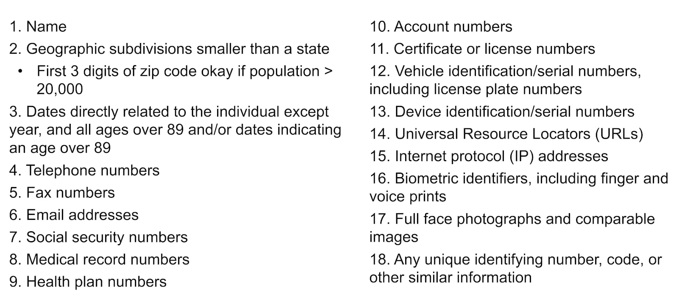
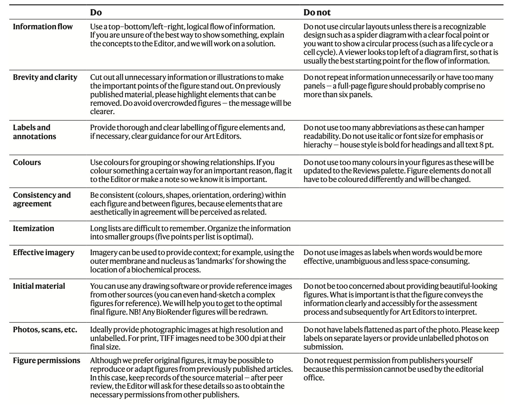
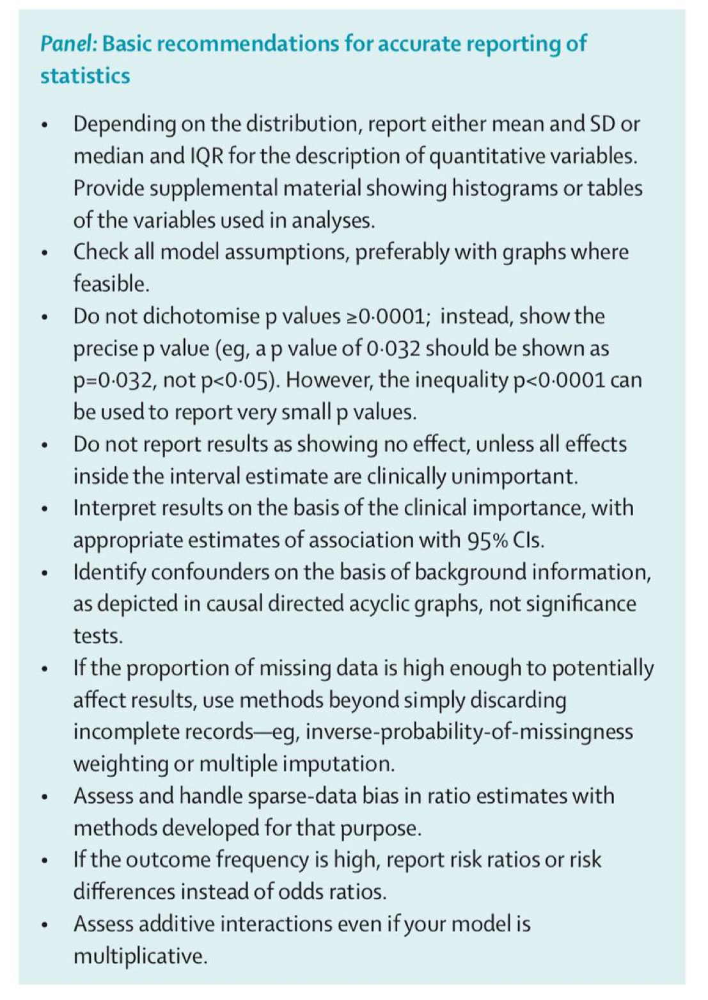
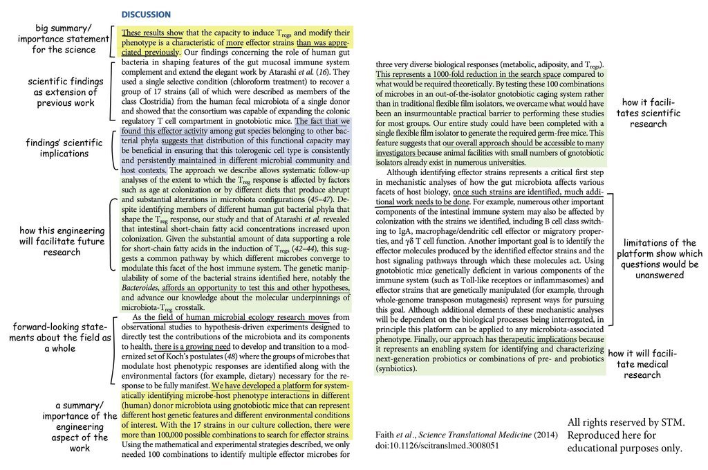
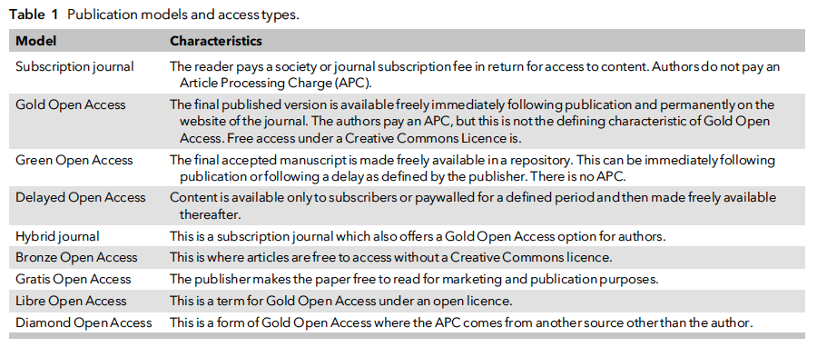
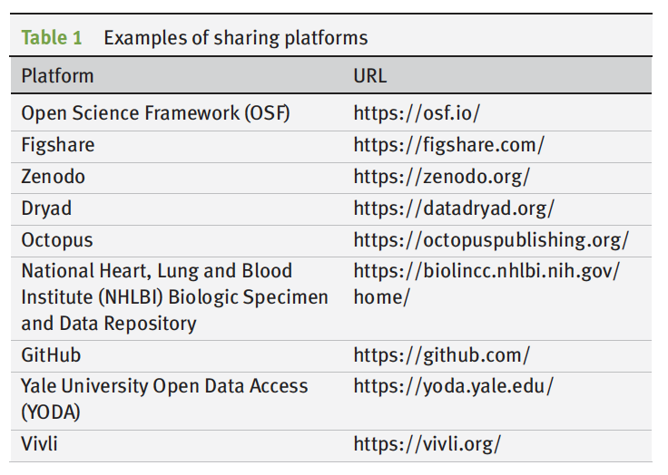

7 Getting your project done
This section is still under construction
In this section, we’ll discuss how to actually make the research happen: what should your workflow be, what are some hints for how to do things quickly and robustly.
Nicoas Zaorsky Guide: https://twitter.com/nicholaszaorsky/status/1479549305623035904?s=11 and Supplemental info:
https://drive.google.com/file/d/1xSB0-UsAKWbZTvxa3stGMSmEP2QGQ7nO/view
Creating the outline:
Rough Drafts:
Rough drafts can be very rough and should be very fast - just try to get the ideas out on to paper. Ideally, letting the draft flow as best as possible, taking a break, then revisiting with editing.
Short sentences. Punch intro sentences to paragraphs, end paragraphs that collect the important points then transition to the next. One idea per paragraph.
Editing:
Writing https://twitter.com/samirshahmd/status/1526917833912946693?s=21&t=_0rCq0fFXkdkj1-069zuNw
Elements of academic style https://twitter.com/juliencayla/status/1574628448680566784?s=12&t=eyTORVO29cWHwMChGFjQeQ
Academic Writing guides in the Academic Writing folder.
Good writing habits – a little bit every day vs blocking off days at a time. Try to overcome inertia.
–writing routines can also help initiate the writing process. Same chair and desk, and coffee. Set mini deadlines. Getting it down below the word limit: https://twitter.com/scientistswrite/status/1636757776633307137?s=20
Writing Style:
Sentence structure / writing mechanics:
-try to keep subjects and verbs together in sentences.
-every unit of discourse should serve a function or make a single point
-the end of a sentence is the ‘stress position’. The information presented at the end will have more impact.
-the beginning of a sentence is the ‘topic position’ - structure sentences to match what you want them to be about: consider: pollen is dispersed by bees vs bees disperse pollen. Topic position = what the sentence is about
-linkage (forward and back) - when new information is introduced, it is better in the stress position; old information that is backward linking is better in the topic position.
-linkage between sentences is what forms the basis for the logical argument - if you can follow from link to link from the start to conclusion, the argument is made. Gaps often occur when specialized knowledge leads an author to ‘assume’ the reader will know
- Make the action of a sentence articulated by the verb.
Always remove “fundamentally”, “certainly”, “basically”, “briefly”, “very” - and similar words which can be removed without changing the meaning at all.
Writing a first draft: https://tapper.substack.com/p/paper-writing-secrets?utm_campaign=post
Some advocate for Figures/legends -> methods -> results -> discussion -> introduction -> abstract/title
BMC how to write… series (esp discussion. https://bmcmedresmethodol.biomedcentral.com/articles/10.1186/s12874-018-0490-1)
Workflow….
First - agree on roles and authorship order -
Authorship order, corresponding author matters - https://journals.lww.com/epidem/fulltext/2004/01000/interpreting_authorship_order_and_corresponding.22.aspx
Second - IRB authorization - For IRB:
If you need PHI, get IRB and justify the need. Must minimize risk to patients (securely receive, store, and analyze - computing infrastructure)

7.1 Key Figures
Start by making your key figures.
Visualization vocabulary https://www.ft.com/content/c7bb24c9-964d-479f-ba24-03a2b2df6e85
Better diagrams advice: “https://vexlio.com/blog/five-simple-things-that-will-immediately-improve-your-diagrams/?utm_source=substack&utm_medium=email” - Fill shapes with 2–3 neutral-grey fills and remove outlines; assign darker greys to higher-priority elements; ensure text-to-background contrast ≥ 4.5 : 1.
- Limit the palette to at most 2 accent colors in addition to greys; use color only for semantic categories or highlighting, never both.
- Insert ample whitespace: group elements by proximity rather than bounding boxes, leave small gaps at connector endpoints, and offset labels/titles from their subjects.
- Standardize shape, gap, and text sizes to a small fixed set and repeat consistently across the diagram.
- Label every arrow or connector unless its meaning is unmistakable from context.
- Increase all text sizes by roughly 20 percent beyond initial choice.
Overall figure checklist https://x.com/scientistswrite/status/1698718678722728212?s=46&t=5eJ6uoTQrbbYTlHIOnRYRg
better options than bar charts (such as dot plot) for continuous data. https://pubmed.ncbi.nlm.nih.gov/25901488/ https://pubmed.ncbi.nlm.nih.gov/31657957/
Some guidance on which type of figure to choose: https://www.datawrapper.de/blog/chart-types-guide?utm_campaign=Data_Elixir&utm_source=Data_Elixir_539
Rules for figures: https://robjhyndman.com/hyndsight/graphics/
Use vector graphics such as eps or pdf. These scale properly and do not look fuzzy when enlarged. Do not use jpeg, bmp or png files as these will look fuzzy when enlarged, or if saved at very high resolutions will be enormous files. Jpegs in particular are designed for photographs not statistical graphics.
Use readable fonts. For graphics I prefer sans-serif fonts such as Helvetica or Arial. Make sure the font size is readable after the figure is scaled to whatever size it will be printed.
Avoid cluttered legends. Where possible, add labels directly to the elements of the plot rather than use a legend at all. If this won’t work, then keep the legend from obscuring the plotted data, and make it small and neat.
If you must use a legend, move it inside the plot, in a blank area.
No dark shaded backgrounds. Excel always adds a nasty dark gray background by default, and I’m always asking authors to remove it. Graphics print much better with a white background. The ggplot for R also uses a gray background (although it is lighter than the Excel default). I don’t mind the ggplot version so much as it is used effectively with white grid lines. Nevertheless, even the light gray background doesn’t lend itself to printing/photocopying. White is better.
Avoid dark, dominating grid lines (such as those produced in Excel by default). Grid lines can be useful, but they should be in the background (light gray on white or white on light gray).
Keep the axis limits sensible. You don’t have to include a zero (even if Excel wants you to). The defaults in R work well. The basic idea is to avoid lots of white space around the plotted data.
Make sure the axes are scaled properly. Another Excel problem is that the horizontal axis is sometimes treated categorically instead of numerically. If you are plotting a continuous numerical variable, then the horizontal axis should be properly scaled for the numerical variable.
Do not forget to specify units.
Tick intervals should be at nice round numbers.
Axes should be properly labelled.
Use linewidths big enough to read. 1pt lines tend to disappear if plots are shrunk.
Avoid overlapping text on plotting characters or lines.
Follow Tufte’s principles by removing chart junk and keeping a high data-ink ratio.
Plots should be self-explanatory, so include detailed captions.
Use a sensible aspect ratio. I think width:height of about 1.6 works well for most plots.
Prepare graphics in the final aspect ratio to be used in the publication. Distorted fonts look awful.
Use points not lines if element order is not relevant.
When preparing plots that are meant to be compared, use the same scale for all of them. Even better, combine plots into a single graph if they are related.
-
Avoid pie-charts. Especially 3d pie-charts. Especially 3d pie-charts with exploding wedges. I promise all my students an instant fail if I ever see anything so appalling.
Visualizations
https://twitter.com/asjadnaqvi/status/1513863752201998340?s=12&t=Zbxqxo5GBwdUGsn30Nc-Lw
https://medium.com/the-stata-guide
R - https://twitter.com/f2harrell/status/1515284543204474881?s=21&t=1ZhOw-Mre83Ylh60daEZiw
Density strips: https://twitter.com/bmj_ebm/status/1482023471928516609?s=43&t=5eJ6uoTQrbbYTlHIOnRYRg

And tables:
Statistical Reporting

7.1.1 Introduction
Formulating Hypothesis - specific, testable. Create a sheet synopsis with collaborators, roles, and author status
Start with hypothesis,
Then create a background with introduction structure to justify the study Checklist
- WHAT IS THE GENERAL TOPIC AREA OR BROAD ISSUE YOUR RESEARCH ADDRESSES?
- WHAT IS THE CRITICAL GAP IN THE LITERATURE YOUR RESEARCH ADDRESSES?
- WHAT IS THE NEXT STEP NEEDED TO ADDRESS THE CRITICAL GAP?
- WHAT IS YOUR RESEARCH QUESTION AND HYPOTHESIZED OUTCOMES (SPECIFY YOUR INDEPENDENT AND DEPENDENT VARIABLES)?
- WHAT IS THE BEST TITLE FOR THIS RESEARCH?
-
- WHAT IMPORTANT BACKGROUND INFORMATION DOES A NAÏVE READER NEED TO KNOW (INCLUDING TERMINOLOGY, ACRONYMS) TO UNDERSTAND WHAT YOUR RESEARCH DOES, WHY IT IS IMPORTANT, AND THE CRITICAL GAP YOU WILL ADDRESS)
INTRODUCTION checklist:
- Is there a statement of theory, what is known, current state of the field (i.e. context of the study subject)?
- Is there a statement of what is unknown, the problem, and the crucial missing link?
- Is relevant background clearly described with all pertinent literature?
- Is there a clear goal of the planned research that will address an existing gap in ability or knowledge?
- Are there specific questions/issues to be addressed clearly identified and stated?
- Is it clear what will be known at the conclusion of the proposed research?
- Is it clear why that knowledge is important?
- Is the innovation, or unique contribution of this study or proposal clear?
7.1.2 Methods:
Subsections: Design, sampling, intervention, data collection, data analysis
In principle, make it so that it’s possible to replicate.
Make sure info re: compliance to regulatory boards (e.g. IRB)
Statistics pitfalls checklist: https://biostat.app.vumc.org/wiki/Main/ManuscriptChecklist
https://www.ncbi.nlm.nih.gov/pmc/articles/PMC5994954/
Box 1. Design Considerations for EHR Based Studies
Where in the health system are the data collected?
What is the coverage/catchment area of your health system?
Is the patient population receiving care across multiple institutions/centers?
Do the data constitute different catchments? (Admixture
How are you defining exposures and outcomes? (Phenotyping)
-
How are you defining person-time?
What is an appropriate ‘burn-in’ period to define a cohort
Is a ‘burn-out’ period necessary to define censoring
Do different populations produce more information (i.e. sicker patients have more encounters)?
- Do the methods and analyses follow from the introduction, theoretical framework, and goals of the study?
Participants:
- Will the subject groups permit a test of the aims/hypotheses?
- What is the evidence that the subjects are appropriate categorized for the study? How are the subjects selected and identified?
-
Procedures:What is the evidence that the planned number of subjects is adequate?
- Are the methods suited to the study goals/aims?
Are adequate controls for bias and other confounding factors implemented?
Are the procedures described in adequate detail that the experiment could be duplicated?
Are the independent and dependent variables clearly identified and defined?
Do the use of figures or tables improve understanding of procedure equipment and procedures conducted?10) Are the statistical analysis procedures justified and considered appropriate for addressing the aims/hypotheses? 11) Are references cited to support proposed methods, particularly those with precedence in the literature
RESULTS:
-
Answer question. Number of subjects. Include p-value and confidence intervals. This should be longest.
Make sure that figures and tables are not generally duplicative. Summarize in the text.
-worthwhile to double check the figures, and do the figure legends adequately explain the figure (stand alone), which includes all acronyms.
This description begins with a detailed review of selection and retention of study subjects in comparison with the source population they are meant to represent, data collection methods, and opportunities for confounding, selection bias and measurement error
-
Are the results reported in a sequence that is aligned with the goals/hypotheses of the study?
Are adequate tables and figures utilized to enable the reviewer to make independent conclusions without reading the statistical findings?
Are tables and figures essential? Or could the information provided in the tables and figures better be summarized within the text?
Are the tables and graphs easy to understand and interpret?
Are the same data illustrated in graphics as in the text (i.e. unnecessary duplication of data presentation)
7.1.3 Conclusions/Discussion
attribution

Chopra - thoughts here: https://twitter.com/vineet_chopra/status/1537843032287870977?s=21&t=hs9Ti21F5xOY5rPLtrceug
Take home message.
“What is the story we want to tell?”
-no new data
-no rehash
-Avoid causation If not designed for that
Should explicitly say what our a-priori hypotheses were? We hypothesized a reduction in blood pressure and healthcare use that was “effect modified?” by adherence strata.
“Such assumptions involve mechanisms that have created the data and are related to sampling, measurement and treatment assignment (in observational studies common causes of factor and outcome) and, as a consequence, the bias this may produce”
Selection bias arises from biased subject sampling, losses to follow-up, subject nonresponse, subject selection
after susceptibles have left the pool of subjects and other mechanisms.
-
“such as where more accurate measurements, validation studies or more confounder measurements are needed. We recognize that general calls for further research are of little utility, but these specific avenues for further research are a directproduct of bias analysis, so somewhat different from general statements.”
“For instance, to account for missing values, approaches include likelihood based methods (3,4), Bayesian models (5), and multiple imputation (6,7); to account for measurement error or misclassification, likelihood based methods (8), Bayesian models (9), multiple imputation (10,11), and regression calibration (12) have been proposed; and to account for confounding one could apply matching, stratification (13), propensity score methods (14), and multivariable regression adjustment (15,16). “
For EHR based studies specifically: https://catalogofbias.org/biases/informed-presence-bias/
-
- Does the discussion progress from a specific goal (e.g. reiterate the study goals) to a more general application of the findings?
- Does the discussion summarize and interpret the findings related to the data collected and associated findings? Are all possible alternative explanations for the findings presented?
- Are patterns, principles, relationships identified and described relevant to the findings without inclusion of speculation?
- Does the discussion explain how the findings related to hypothesized outcomes as well as relevant literature on the topic?
- Are the theoretical implications of the findings addressed?
- Are explanations provided regarding unexpected or expected findings as well as agreement or contradictions of the findings to relevant literature?
- Are applications of the findings identified or described?
- Are generalizations to other contexts, species, or conditions identified or described without overgeneralizing or making conclusions that do not follow from the data or methods?
- Does the discussion identify limitations to the current work, or future work that is needed to resolve contradictions or to explain unexpected findings?
- Is there an explanation regarding the contribution of the findings to the broader topic or context to circle back to the big picture and gap in the literature being addressed?
Title: As few words as possible. Active tense title that conveys what you found is ideal.
Include: PICO OR SPICED
Setting - if relevant
Population - who was studied
Intervention - independent variable
Condition - patients, as well as modifiers
Endpoints - what was measured
Design per CONSORT; then study type
Cut down to ~12 words, lead with most important terms
https://x.com/scientistswrite/status/1699080043337503133?s=46&t=5eJ6uoTQrbbYTlHIOnRYRg
3 types:
-interrogative title: states research question, may be sensationalist (e.g. editorials)
-declarative: states main findings - may come off as biased, overly definitive
-neutral: describe the study without stating causal relationship (most common).
Avoid acronyms.
TITLE: Does the title concisely reflect the article’s main focus?
***Example 1***: Effectiveness of Cloposcopic Cervical Screenings
***Example 2***: Prevalence of thyroid disorders in obstetrics patients
***Example 3***: Chronic obstructive pulmonary disease: molecular and cellular mechanisms
***Example 4***: Gastrointestinal Lymphoma: Radiologic-Pathologic Correlation7.1.4 Abstract
7.1.5
Abstract: Do last. generally 200-300 words. 2nd most read part (to title). End with the strongest possible statement of the major findings but don’t overstate results. Have external reviewer to look for key information that didn’t make it in to the abstract (or vice versa)
Knowing the magnitude and standard error of an empirical estimate is much more important than simply knowing the estimate’s sign and whether it is statistically significant. Yet, we find that even in top journals, when empirical social scientists choose their headline results - the results they put in abstracts - the vast majority ignore this teaching and report neither the magnitude nor the precision of their finding
7.1.6
Submission:
Publishing Process:
Figuring out where to publish:
https://jane.biosemantics.org/
Journal Selection:
-Do they publish stuff like this? (Shortcut is to assess what journal you are citing from)
Impact factor vs likelihood of acceptance
-Aim high - shoot for the prestigious journal that you might have a realistic chance at.

Considerations:
-read author instructions carefully (formats, tables/figure numbers, different categories of submission. Will save time in the long term (avoiding).
How to disseminate clinical research: doi:10.1111/anae.15781
—> choosing journal based on social media promotion and presence in addition to IF (which reigns because some institutions tie promotions to this)
—> see if your institution or funder will pay for open access publication
—> ask people for promotional opportunities
Manuscript checklist:
Good manuscript checklist: https://www.wemjournal.org/article/S1080-6032(22)00161-2/fulltext
Cover letter: -Author agreements -Not being considered for publication elsewhere -Description, novelty, and significance of the findings. -Special considerations (if there might be confusion about what is new and what isn’t, etc.) -Select reviewers / associate editors (who might have expertise, include this - why you suggested them) - try to take advantage of this.
https://twitter.com/vineet_chopra/status/1483855989652656128?s=21
Responding to reviewers: Sleep on the manuscript for a week, then look at it with fresh eyes. Rejections: incorporate feedback and don’t be discouraged. -cool off for a day off, then look at the reviewer comments to look at comments First Decision (minor revision, major revision, reject w full review, reject w/o review e.g. by editor/assoc editor). Second decision (accept v reject - still mostly head to reject).
How to not screw up a request for revision: -clear and comprehensive response (respectful of reviewers). Do it, point by point. Take as much space as needed to clarify the revision. -don’t make them look for revisions: make it as easy as possible for them to see if you’ve addressed (“often cut and paste the revised statements right under the bullet point”) -if you disagree - rebuttal should be detailed and can include citation -if question about perceived novelty and significance of the findings: this is an especially important to respond to.
Statistical issues: https://discourse.datamethods.org/t/reference-collection-to-push-back-against-common-statistical-myths/1787
Supplementary: Is that material a useful adjunct? Is it worth including in the main paper?
7.1.7 Post-publication/submission:
Visual abstract:
https://doi.org/10.1136/bmjebm-2023-112784 RIVA checklsit
Templates at https://simplesage.io/resources
Find phi https://github.com/jacobpstein/pii#readme
Guide to licenses: https://opensource.org/licenses
Where to share data after: - https://zenodo.org/records/7946938
